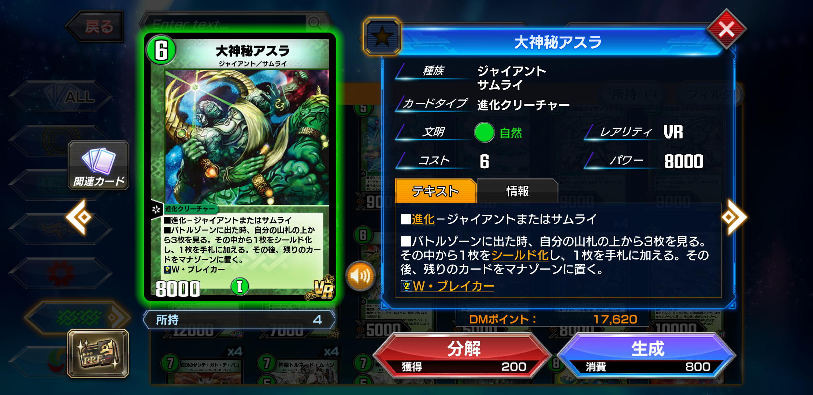
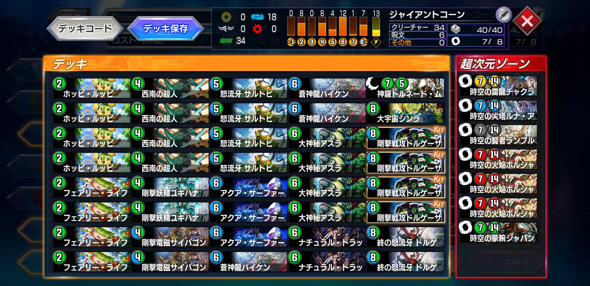
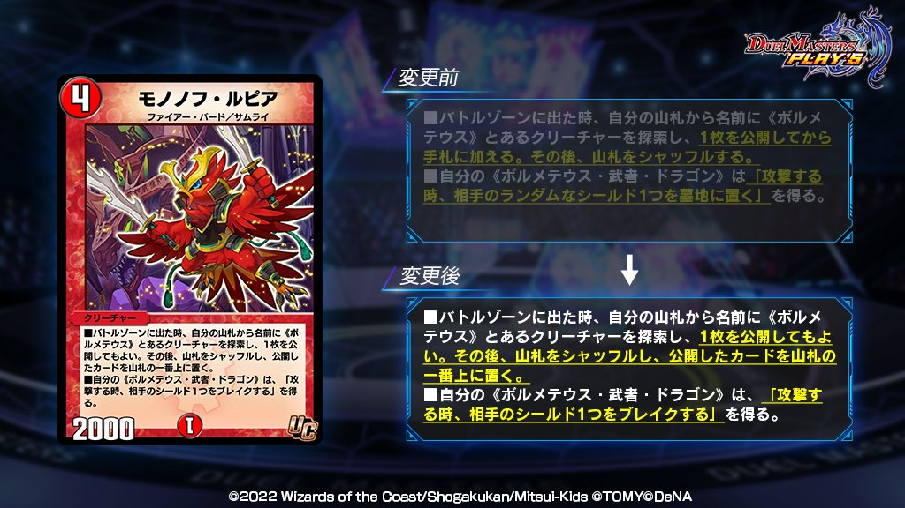
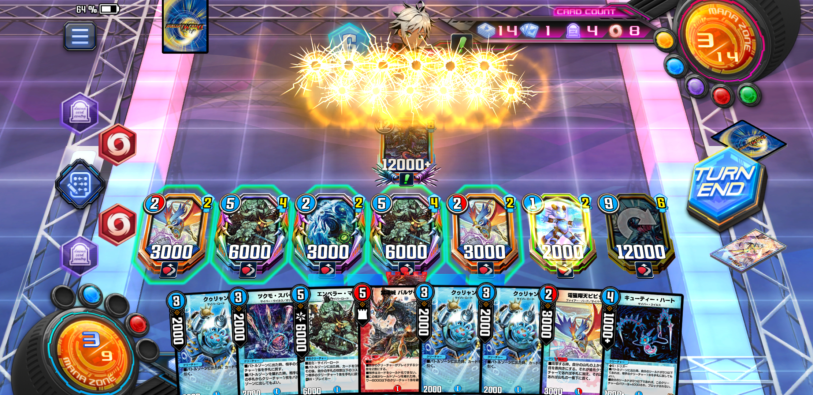
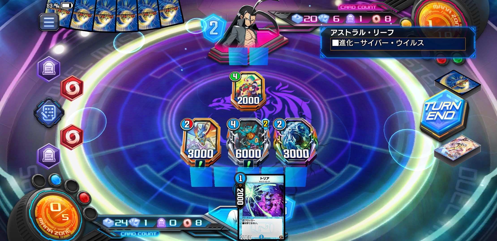

ネット縛りマスターチャレンジ【サイバー】
サイバー・A・アイアンズで天を突け！
3月中旬にSNS疲れを起こし、そのままデジタルデトックスに突入した。
そこで、兼ねてから気になっていた「ネット情報なしでどこまでランクマで勝ち上がれるか」という縛りプレイを決行。
3月16日スタート。13弾「超次元解放」の情報は全てシャットアウトした状態で新弾リリース。NDはゴールドランク、ADはシルバーランクから。
縛りプレイの詳細はこちらの記事に。
【ランクマ】ネット縛りマスターチャレンジ【マスター】デジタルデトックスといいつつ、握ったデッキはサイバーである。めちゃくちゃネット駆使してそう。
もくじ
- サイバー・A・アイアンズで天を突け！
- 狙うはワンショット
- 小回りの効くジャイアントを目指せ
- ドローし放題
- バウンスで相手に干渉可能
- 多色カードを抑えられる
- 完成・NDマスター達成

新弾が登場し、最初に目をつけたのは大神秘アスラだった。これまでジャイアントをNDで使ってきたなかで、事故った時の中盤の支えになるカードがずっと欲しいと思っていたので、真っ先に4枚生成した。
しかし、自前のジャイアントデッキはすぐに勝率が50%ほどになってしまった。サイキッククリーチャーとしてチャクラとボルシャックメビウスの採用率はリリース当初から高くなっており、これらは5ターン目付近でこちらの初動を潰せるからである。

デッキパワーは高いものの、運が悪ければ回らないジャイアントは、今は使いたくないと思ってしまった。成績がどんどん落ちていく今の自分は相当運も悪く、フェアリーライフなどの2コスブーストも引けない。
さらにジャイアントは西南の超人も引かなければならないし、ドルゲーザも引かなければならない。マナカーブに沿った動きをしなければならないのに、多色カードが多すぎて色事故は日常茶飯事である。強いが他のデッキより運ゲーっぽさが高いと感じていた。
だが、ジャイアントのパワーも捨て難い。殴って勝つデッキじゃないとデュエプレを楽しめない。加えてコントロールに負けるのが嫌なので、ドルゲーザの大量ドローは非常に頼りになるからだ。
そこで目をつけたのが、新弾で登場したサイバー・A・アイアンズである。
このカードを見た時、サイバーのドルゲーザだ！！と思った。
狙うはワンショット
ビートダウン系のデッキの中でもジャイアントを使おうとしたのは、一度の攻撃で勝負を決めるワンショットタイプのデッキだからだ。
これまでビート系にはドリームメイトやガントラ、武者ドラゴンなどのスピードを維持しながらシールドをどんどん割っていくデッキが主流だったが、12弾でまたその流れが変わったと感じている。
キリコやライゾウ、バイオレンスフュージョンなどの超強力なコンボデッキが登場し、中途半端にシールドを攻撃するとコンボパーツを揃えられ一撃必殺のカウンターを食らうようになってしまった。これはアポロやツヴァイが台頭した7弾環境に似ているものがある。
これらにビートダウンで対抗するには、ギリギリまでシールドに手をつけずに、攻撃するなら一斉攻撃することだ（当時のNEXは別ね）。

これまでは赤青剣誠がそれをできるデッキとして環境にいたのだが、あれはあれでやらかしていたため13弾ではナーフを受けてしまった。
そしてワンショット戦術それ自体がビートダウンというよりコンボデッキっぽいところがあるのは否めないが……。だが自分から殴りにいくなら今の環境は黒緑速攻並みに振り切らない限り、ワンショットが手堅いと感じる。
サイバーはリソース確保は得意としているが、肝心のシールドを割り切るまでの決定力が不足している。なんとかサイバーにワンショットできるような打点を持たせられないだろうか？
小回りの効くジャイアントを目指せ
そんな時目に止まったサイバー・A・アイアンズには、魅力が詰まっていた。
- 水単色である（多色カードを抑えられる）
- シンパシー追加で手札から現実的に召喚可能に
- 場に出たとき最大5ドロー固定（トップで引いても5ドローが強い）
- パワー12000のTブレイカー（ドルゲより強い）
- 水のクリーチャーはブロックされなくなる
- サイバーはカードプール強化の真っ只中
- イラストがかっこいい
ジャイアントでドルゲーザに求めていたもの全てがアイアンズにはあった。本体の性能もさることながら、周辺パーツが非常に幅色くジャイアントより小回りが効くと思った。
ジャイアントはやはり2コスブーストから4コスジャイアント（できれば西南）に繋いでなんぼのところがあるが、そもそも2コスブーストの成功率は8枚投入しても70~75％ほどである。
さらに3ターン目までに西南を引ける確率も70%前後だし、その後ドルゲーザを引かないといけない。サルトビやアスラルートが開発されたものの、肝心の2コスブーストに失敗してはいけないところは変わらない。
その点、サイバー軸にするとその初動の心配がほとんどなくなる。サイバーロードやサイバーウイルスは軽量にしてドロー、手札交換やバウンス持ちなため序盤から好きなように動くことができる。
ドローし放題
サイバーにはクゥリャン、アストラルリーフやエンペラーマルコなど超強力なドローソースが豊富だ。ジャイアントではドルゲーザ4枚がその役割を担っているが、そもそもドルゲーザを引けるドローソースがないというジレンマがある。
サイバーにはそういった心配がなく、切り札であるサイバー・A・アイアンズが引けずに負けることはほぼない。
さらに1試合中のドロー数が多いということはそれだけ多くのコンボパーツにアクセスできるということであり、特定のカードの1~2枚差しも可能である。
バウンスで相手に干渉可能
ジャイアントではほぼ相手の盤面に干渉することができない。とにかく相手より先に自分の盤面を強化してぶん殴るデッキなため、相手が強力なぶん回りシステムクリーチャーを召喚しても指を咥えて見ていることしかできない。
今期はまずチャクラなどのサイキッククリーチャーの存在が大きく、みすみす覚醒を許してしまっている点が心もとなかった。メジャーなゼンアク、ヘヴィデスメタルも除去が難しい。
サイバーにはツクモスパーク、エンペラーマルコが手軽にバウンスを行なってくれるため、いざとなったら相手の妨害ができるのが環境前期は非常に強かった。
多色カードを抑えられる
ジャイアントはずっと強化を受け続けているものの、２コスブースト依存である点ともう一つ、多色依存であるという問題があると思う。
西南の超人から大型ジャイアントを莫大なリソースから展開できるのが強みだが、必須パーツに多色が多すぎる。
ドルゲーザ、ドルゲユキムラ、サルトビ、サイバゴン……やりたいことをやろうとすると多色枚数が12枚を軽く超える。
デュエプレのマナシステムは色を一度解放してしまえば使い放題だが、マナカーブを意識するビートダウンでは話が別だ。
ジャイアントは2→4→6の動きが強いが、4ターン目までに多色カードを3枚以上引いてしまうとどこかでタップインさせざるを得ないため、必要パーツが引けてもマナカーブが破綻してしまうのだ。ちなみに多色が12枚あると、4ターン目までに3枚以上引いてしまう確率は55%もある。
パーツを引くだけでの四苦八苦しているのに、そこに多色事故も50%以上の確率で発生するとやってられない。
Bロマやキリコ、ライゾウなど展開にスピードを求められるデッキ相手にも、ミラクルデリンダーで4ターン目に6マナ手札5枚にしてくる5c相手にも、マナ置きに失敗している場合ではないのだ。
サイバー・A・アイアンズはまず自分自身が水単色であるのが、ジャイアントを例にするとどれだけ偉いかわかってもらえただろうか。
多色カードは確かに強いが、マナカーブを意識してなんとしても4枚以下に抑えたかった。そして水単色が多いサイバーでなら、それができると思った。
サイバーでジャイアントを再現することを出発点にし、完成したのがこちら。
どうしても打点が不足してしまうところを、火文明で補った形だ。
基本的に2ターン目からどんどんサイバーを展開し、相手の動きに合わせてアストラルリーフやエンペラーマルコに進化し、バウンスとドローで戦線を維持しながらアイアンズにつなげる。

最終的には紫電城バルザークでブレイク数を2倍にし、アイアンズでブロックされない6ブレイクを決めてフィニッシュする！
バルザークは白騎士やベガ、ヘブンとバイオレンスの衝撃、大神秘アスラなどのシールド化を無効化してくれて強いぞ。
コメットチャージャーはチャクラを始め5cブロッカーや白騎士、デスマーチを除去できる上、3→5でマルコやツクモリーフにつながるため今環境必須だった。

これによりNDにて4月8日にマスターに到達した。
新弾を迎え、自力でデッキを組む上でビートダウン型にするところはいつもと変わらないが、今回はとにかく「運が悪い自分が事故らない」構築を目指した。
カードが引けずに負けるところはサイバーの大量ドローで補い、多色は限界まで減らした。
自分で考えて組んだ手応えもあり、この時期はデュエプレが非常に楽しめたと思う。
……まあ、その後はマスターランクでレート1400まで溶かしたのだが……。
（天を突けと言いながら地底を掘り進めまくる）
4月中旬には仮想的だった超次元や白騎士がめっきり数を減らし、それらを上から叩き潰すバイオレンスフュージョン系5cが一気に普及してしまったことが原因になる。他にもライゾウやキリコなどのランプ系も勢いを取り戻し、Bロマとデスドラゲリオンも環境の抑止力として存在していたように思える。
如何せんネットを見ていないのでデッキレシピは確認していないのだが、あまりに流行っているので大体何をされるのかわかるようになってしまった。
それらには得意のバウンスがほとんど効かず、こちらの盤面が整う前に勝負を決められてしまい一気にレートを落としてしまった。

最終的にバトルアリーナ7thにこのサイバーデッキで出場することで、今回のネット縛りマスターチャレンジは完了した。
結果は3勝2敗で5回戦敗退。が、やはり自分で試行錯誤した愛着のあるデッキで勝負ができたこと自体が楽しく、やってよかったと思える。
今後はまたのんびりとTwitterのタイムラインにも浮上しながらデュエプレを楽しんでいこうと思う。